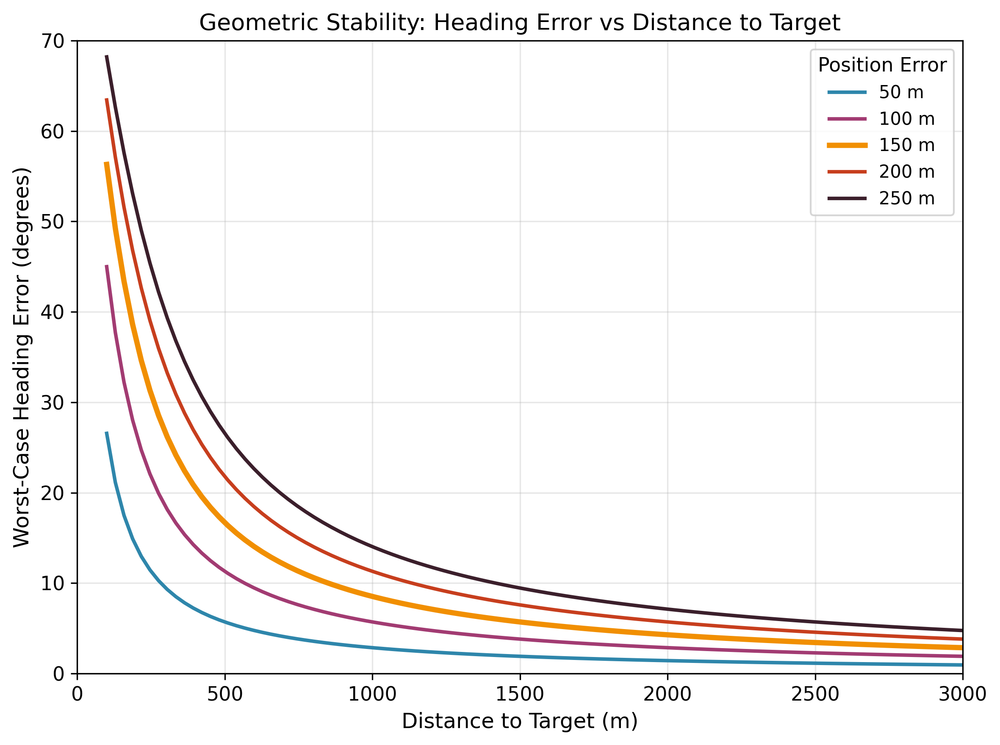

GNSS非依存環境向け
Resilient UAV Positioning System for GNSS-Denied Environments
廣津 和哉
指導教員：中尾 彰宏 教授
東京大学 大学院工学系研究科 システム創成学専攻
2026年1月
1. 序論
2. 全体設計
3. クライアント側
4. インフラ側
5. 統合・結論
研究背景
UAV（ドローン）の普及と測位の重要性
物流・配送、インフラ点検、災害対応など応用が拡大
自律飛行の実現にはリアルタイムの正確な測位 が必須
現状：GNSSへの強い依存
GPS等の衛星測位がUAV航行の事実上の標準
メートル級精度、グローバルカバレッジ、低コスト
しかし、GNSS依存は単一障害点 を生む
GNSSの脆弱性
意図的妨害 ：Jamming（信号遮断）、Spoofing（偽信号注入）遮蔽環境 ：都市峡谷、屋内、トンネル、森林地球外環境 ：月面・火星探査ではGNSS利用不可
課題： GNSSが使えない環境でも動作するバックアップ測位システム が必要
【図のプレースホルダー】都市峡谷でのGNSS遮蔽イメージ
1. 序論
2. 全体設計
3. クライアント側
4. インフラ側
5. 統合・結論
なぜLoRa（LPWA）を選ぶのか
背景：ドローン通信でのLPWA利用
遠距離飛行するドローンではLPWA（LoRa等）による通信 が多用されている
通信用のビーコン信号を測位に再利用 できれば、専用測位電波が不要
→ インフラコストの大幅削減 が可能
通信方式の比較
方式
通信距離
消費電力
コスト
GNSS依存
Wi-Fi
〜100m
高
中
なし
Bluetooth
〜50m
低
低
なし
5G/LTE
〜数km
高
高
基地局で必要
LoRa
2-15km 低 低 なし
LoRaを選択する理由
1. 長距離通信（2-15km）
広いエリアを少数のビーコンでカバー可能
2. 低消費電力
バッテリー駆動のビーコンで長期間運用可能
3. 低コスト
通信用インフラとの共用で専用設備が不要
4. GNSS非依存
時刻同期にGNSSを必要としない（RSSIベース）
本研究のアプローチ RSSI（電波強度） を
1. 序論
2. 全体設計
3. クライアント側
4. インフラ側
5. 統合・結論
関連研究
非RF測位手法
手法 利点 欠点
Visual SLAM [1] 高精度 (cm級)
計算負荷が大
LiDAR 照度変化に強い
重量・消費電力・
INS 自己完結
誤差(ドリフト)が蓄積
RF測位手法
手法 利点 欠点
TDoA [2] 高精度 (m級)
ナノ秒精度の同期が必要
AoA [3] 到来方向の検知が可能
特殊なアンテナ(アレイ等)
RSSI [5] 構成が単純・安価同期不要
精度が低い
本研究の立ち位置：RSSI + LoRa [4]
目標 ：GNSS非依存・低コスト・広域カバレッジ測位方式 ：高コストな非RF手法やGNSS/特殊ハードウェアが必要なTDoA/AoAではなく、RSSI を選択通信方式 ：長距離 (2-15 km)、低消費電力、低コストなLoRa を選択
1. 序論
2. 全体設計
3. クライアント側
4. インフラ側
5. 統合・結論
本研究が取り組む2つの課題
課題1：クライアント（UAV）側の測位
「ノイズの大きいRSSIのみで、いかに実用的な精度を実現するか？」
RSSIは環境要因（マルチパス・遮蔽）により大きく変動する
従来の最小二乗法を使った三辺測量：外れ値の影響を受けやすい
課題2：インフラ（ビーコン網）側の自己位置推定
「位置がわからないビーコンの座標をどう推定するか？」
GNSS利用不可のため、全ビーコンの正確な位置を把握するコストが大きい
一部のビーコンのみ位置が既知と仮定（測量 / 境界線付近 / 一時的なGNSS利用で取得）
従来手法（反復三辺測量）：推定誤差が連鎖的に拡大し破綻する
実用的なシステム構築には、クライアント側・インフラ側の両方の課題解決が必要
1. 序論
2. 全体設計
3. クライアント側
4. インフラ側
5. 統合・結論
研究目的
全体目標 ：GNSSが使えない環境でも動作する、低コスト・広域カバレッジのバックアップ測位システム の提案
目的1：クライアント側 ー RSSIの外れ値に頑健な測位手法の提案
マルチパスや遮蔽による大きなRSSI変動があっても、実用的な精度を達成する
目的2：インフラ側 ー 少数の既知点から全体を推定する手法の提案
一部のAnchorのみ位置既知の条件下で、残りのビーコン位置を高精度に推定する
目的3：統合システム ー 誤差伝播の解析と航行可能性の検証
インフラ推定誤差がクライアント測位に与える影響を定量化し、実用的な航行が可能かを評価する
1. 序論
2. 全体設計
3. クライアント側
4. インフラ側
5. 統合・結論
システムアーキテクチャ
3つの構成要素
インフラ（ビーコン）
Anchor ：位置既知（少数）Unknown ：位置未知（多数）相互通信でRSSIを計測
クライアント（UAV）
LoRa受信機 + 高度計
ビーコン信号を受信して測位
ハブ（計算拠点）
ビーコン位置推定を実行
推定座標を各ビーコンに配信
重要な設計特徴：非対称通信
ビーコン → UAV の一方向通信
UAVは送信しない（パッシブ受信）
UAV数に制限なし （スケーラビリティ）位置プライバシー を保護
1. 序論
2. 全体設計
3. クライアント側
4. インフラ側
5. 統合・結論
運用フロー (Operational Timeline)
Phase 0: 事前準備
対象地域の地形データ取得
シミュレーションによるGCN学習
学習済みモデルのHubへの配置
Phase 1: 展開
ビーコンをエリアへ展開 (投下等)
各ビーコンの座標は不明
Phase 2: 自己位置推定
ビーコン間のパケット交換・RSSI収集
GCNによる座標推定 推定座標を各ビーコンへ配信
▶ 課題 ：地形によるRSSI変動▶ 提案 ：Physics-Aware GCN
Phase 3: 運用
ビーコンが座標情報を放送
UAVが受信し自己位置を計算
ミッションの実行
▶ 課題 ：RSSIの外れ値（NLOS）▶ 提案 ：Huber損失 + 高度固定
特徴： 現地測量が不要 → 災害時等の迅速な展開が可能
1. 序論
2. 全体設計
3. クライアント側
4. インフラ側
5. 統合・結論
クライアント側：基本手法と提案アプローチ
基本手法：RSSI三辺測量
各ビーコンへの距離残差の合計 を最小化：
従来 ：L(r) = r²課題 ：外れ値が解を歪める
pᵢ
p̂
||p̂−pᵢ||
d̂ᵢ
rᵢ = ||p̂−pᵢ|| − d̂ᵢ
提案手法：ロバストな三辺測量 ← 我々の先行研究[10]で提案
1. 高度固定
気圧計でZ軸を固定し、推定を2次元化
垂直誤差の水平方向への波及を防止
2. Huber損失関数 [6]
大きな誤差に対するペナルティを線形化
外れ値の影響を抑制し、頑健性を確保
なぜHuber損失が必要か？
左図 ：実測RSSI分布（山岳地帯シミュレーション）上側（LOS） 下側（NLOS） 外れ値 右図 ：理論値（Free-space）— 外れ値なし
損失関数の比較
なぜ「線形」で「0」ではないのか？ 距離の傾向情報 は含まれる（完全ランダムではない）滑らかに接続 ）最適化が安定
1. 序論
2. 全体設計
3. クライアント側
4. インフラ側
5. 統合・結論
クライアント側：シミュレーション評価
都市環境（0.55 km²）の建物屋上にビーコンを10基配置し、UAVの位置推定精度を従来手法と比較評価する。
実験設定
シミュレータ ：OMNeT++ / FLoRa環境 ：3D都市モデル（ベルリン、0.55 km²）UAV高度 ：100m伝搬モデル ：Nakagami Fading
結果（中央値誤差）
条件 従来手法 (L2) 提案手法 (Huber) 改善率 静止時 29.7 m 4.5 m 85%↓ 移動時 (10m/s) 84.2 m 63.0 m 25%↓
従来手法はビーコン数が増えると外れ値の影響で精度が悪化するが、
提案手法はビーコン数とともに精度が向上 する。※ビーコン4基では両手法ほぼ同等
1. 序論
2. 全体設計
3. クライアント側
4. インフラ側
5. 統合・結論
クライアント側：実機実験
目的 ：シミュレーション結果の実環境検証（ビーコン4基という制約下での動作確認）
実験設定
場所 ：イタリア Pergine（50m × 12m）UAV ：Holybro X500 V2 + Pixhawk 6CLoRa ：RFM95W + VERT900アンテナビーコン数 ：4基（矩形配置）
結果（中央値誤差）
実験
従来手法
提案手法
手動・楕円 (5-10m)
7.41 m
7.04 m
手動・8の字 (5-10m)
8.65 m
8.59 m
自律・楕円 (15m)
26.93 m
25.91 m
自律・8の字 (15m)
16.01 m
14.38 m
実機評価の結論
提案手法は実環境でも破綻していない
従来手法と同等以上の精度（中央値・P90ともに悪化なし）
異常な外れ値が発生していない → Huber損失が機能
シミュレーション結果との整合性を確認 ：ビーコン4基では両手法同等（スライド10と一致） 今後 ：ビーコン数を増やした追実験で優位性を検証
考察：高度による精度低下
高高度 (15m) で精度が低下
原因 ：モノポールアンテナの指向性真上にヌル点 → 直近でRSSIが急低下
アンテナ指向性の影響（距離-RSSI関係の逆転）
1. 序論
2. 全体設計
3. クライアント側
4. インフラ側
5. 統合・結論
インフラ側：問題定式化と手法概要
ビーコン網の自己位置推定：一部のAnchor（既知位置）のみから、残りのUnknownノードの位置を相互のRSSI測定で推定する。
問題設定
入力 ：ビーコン間のRSSI測定値、Anchor位置（少数）出力 ：Unknownノード（多数）の2D座標
なぜ難しいか：地形によるRSSIの乱れ
山岳地形では回折・遮蔽により信号が大きく減衰
同じRSSI値が複数の距離に対応 しうる→ 単純なRSSI-距離変換が破綻する
提案手法：Physics-Aware GCN
学習可能なパスロスモデルで距離を推定（物理的事前知識）
エッジごとに異なる重みで信頼性を考慮
グラフ全体で同時推論 → 誤差累積なし
→ 詳細は次スライドにて
比較手法1：Iterative Multilateration [9]
アルゴリズム（逐次推定）
Anchor間リンクでパスロスモデルを校正
各リンクのRSSIを「確定的な」距離に変換
Anchorに隣接するUnknownを三辺測量で推定
推定ノードをAnchorに昇格し、手順3を繰り返す
失敗原因 ：地形下ではRSSI-距離変換が不正確 →
比較手法2：Plain GCN（Ablation）
提案手法と同じGCN構造
RSSIを入力特徴量として直接利用
物理モデル（RSSI→距離変換）なし
課題 ：RSSIと距離の複雑な関係をデータのみから学習する必要があり、汎化が困難
1. 序論
2. 全体設計
3. クライアント側
4. インフラ側
5. 統合・結論
Physics-Aware GCN：アーキテクチャ
Node Features: [x, y, is_anchor]Anchor: 既知座標 / Unknown: Anchor平均で初期化
Edge Features: [RSSI時系列(10), 学習距離]物理モデルで変換した距離推定を特徴量に含める
1. 学習可能な物理モデル
d̂ = 10^((P_t + o − RSSI) / 10n)
パスロス指数 n、オフセット o を学習
環境に適応した距離推定を提供
2. Edge-Conditioned Conv [7][8]
エッジ特徴量からエッジ固有の重み行列 を生成
EdgeNet(MLP)：RSSI+距離 → 重み
地形で歪んだリンクを自動的にダウンウェイト
3. Anchor固定
Anchor座標は訓練・推論時に固定
メッセージパッシングには参加
損失はUnknownノードのみで計算
1. 序論
2. 全体設計
3. クライアント側
4. インフラ側
5. 統合・結論
インフラ側：実験設定と学習条件
シミュレーション環境
領域 ：4km × 4km（トルコ山岳地帯）伝搬モデル ：Longley-Rice（地形考慮）/ Free-spaceノード数 ：64（Anchor 16, Unknown 48）密度 ：4 nodes/km²RSSI ：10サンプル/リンク（時系列）
実験エリアの例（山岳地形）
GCN学習条件
学習データ
同一地形上で1000インスタンス を生成
各インスタンスでビーコン位置をランダム化
RSSIにガウスノイズを付加
データ分割：学習800 / 検証100 / テスト100
学習設定
Optimizer ：Adam (lr=0.001)Epochs ：500（Early stopping適用）Loss ：MSE（Unknownノードのみ）
汎化性能について
本設計の前提 ：特定のデプロイエリアに対するモデル学習再学習が必要
1. 序論
2. 全体設計
3. クライアント側
4. インフラ側
5. 統合・結論
インフラ側：評価結果
結果（平均誤差）
手法 地形あり Free-space 反復三辺測量 1974 m 6.3 m Plain GCN 750 m 258 m 提案手法 206 m 51 m
物理モデル埋め込みの効果
反復三辺測量比：90%改善 （1974→206m）
Plain GCN比：72%改善 （750→206m）
学習されたn=4.86（free-space n=2より大）
定性結果（地形あり） ：推定位置（×）vs 真値（○）
結論 ：Free-spaceでは古典的手法が有効だが、現実の地形では物理モデル+GCNが不可欠
1. 序論
2. 全体設計
3. クライアント側
4. インフラ側
5. 統合・結論
ビーコン位置誤差がUAV測位に与える影響
背景 ：Physics-Aware GCNによるビーコン自己位置推定は平均206mの誤差を持つ。
実験条件
UAVは静止状態 で測位
ビーコン座標に0〜300mの誤差を付加
2000地点でUAV測位誤差を計測
結果
ビーコン誤差
UAV測位誤差（平均）
0 m（理想）
122 m
200 m（GCN相当）
157 m（+35m）
300 m
207 m
誤差伝搬は限定的
1. 序論
2. 全体設計
3. クライアント側
4. インフラ側
5. 統合・結論
航行シミュレーション
目的 ：ビーコン誤差200mの条件下で、UAVはウェイポイントに到達できるかを検証する。
実験設定
推定位置に基づくウェイポイント追従制御
比例制御（$k_p=0.3$, $v_{max}=15$ m/s）
到達判定 ：真の位置が目標から200m以内
結果
シナリオ 到達率 平均誤差 Diagonal（4km直線） 100% 152 m Circular（半径1km） 100% 137 m Area Sweep（網羅走査） 100% 145 m
青：実経路、赤点線：推定経路、緑星：ウェイポイント（ビーコン誤差 200m）
結論 ：4km規模・到達判定200mの条件下で、ビーコン誤差200mでも全シナリオで到達率100% を達成
1. 序論
2. 全体設計
3. クライアント側
4. インフラ側
5. 統合・結論
なぜ航行できるのか：位置誤差と方位角誤差の関係
原理：位置誤差と方位角誤差
UAVは推定位置 に基づいて目標への方位角を計算し飛行する。
目標
真の位置
推定位置
d
ε
Δθ
Δθmax = arctan(ε / d)
（誤差が目標方向に垂直な最悪ケース）
位置誤差εが一定でも、
具体例（ε = 150m の場合の最悪ケース）
目標距離 d 最大方位角誤差 Δθ 航行への影響 1 km 8.5° 安定（ほぼ直進） 500 m 16.7° やや不安定 200 m 37° 不安定（蛇行）
設計方針 ：到達判定を200mに設定することで、
Diagonal Transit（ビーコン誤差200m）
長距離は直進、目標接近時に蛇行
方位角誤差と目標距離の関係

距離が近いほど方位角誤差が急増
結論 ：遠方目標への航行は安定だが、接近時は不安定になるため到達判定を200mに設定 して回避
1. 序論
2. 全体設計
3. クライアント側
4. インフラ側
5. 統合・結論
本研究の新規性
新規性1：データ通信用LoRaの測位への再利用
従来 ：測位専用電波（UWB, ToA）
専用のインフラ・設備が必要
→
提案 ：通信用LoRaビーコンのRSSIを測位に転用
専用設備不要でインフラコストを削減
新規性2：ロバストな三辺測量（クライアント側） — 我々の先行研究[10]
Huber損失関数の導入
L2とL1のハイブリッド損失
高度固定による次元削減
気圧計から高度を取得し推定を2次元化
新規性3：Physics-Aware GCN（インフラ側）
物理モデル（パスロス式）の埋め込み
RSSI→距離変換に学習可能なパスロス式を使用0 ）が地形に適応的に学習
Edge-Conditioned Convolution
エッジ特徴量（RSSI・距離）に応じて重みを動的生成
いずれもRSSIの本質的な不確実性 （分散大、外れ値、環境依存）に対処する手法設計
1. 序論
2. 全体設計
3. クライアント側
4. インフラ側
5. 統合・結論
結論
GNSS非依存環境におけるLoRaベースのUAV測位システムの提案GNSSが使えない状況でのバックアップとして有用
貢献1：ロバストなクライアント測位（Huber Loss + 高度固定）
シミュレーション：静止時 4.5m （従来比85%改善）、移動時 63m （25%改善）
実機実験（イタリア）：7m （好条件下）で検証
貢献2：Physics-Aware GCNによるインフラ自己位置推定
平均誤差 206m ：反復三辺測量比90%改善 、Plain GCN比72%改善
物理モデル（パスロス式）の埋め込みが精度向上に寄与
貢献3：統合システムの実現可能性評価
ビーコン誤差200mでもUAV誤差増加は+35mに留まる（誤差伝搬は限定的）
幾何学的安定性により、遠方目標への航行は大きな測位誤差下でも安定
4km規模・到達判定200mの条件下で全シナリオ到達率100%
1. 序論
2. 全体設計
3. クライアント側
4. インフラ側
5. 統合・結論
今後の展望
オンライン学習により、ネットワーク構成の変化に応じて位置推定を逐次更新する仕組みを実現する
1. 実環境での検証（最重要）
インフラ側GCN（ビーコン自己位置推定）はシミュレーションのみで評価 → 実環境での完全システム検証が必要。デプロイ後に収集した実測RSSIデータでモデルをファインチューニングし、シミュレーションと実環境のギャップを埋める。
2. 汎用伝搬モデルの開発
多様な地形・周波数・ネットワーク構成で事前学習した基盤モデル（Foundation Model）の構築。地形シミュレータで大規模な学習データを生成可能 → 新規環境では少量の実測データでファインチューニングするだけで適応。
3. 動的ネットワークへの拡張
ビーコンの追加・削除・移動に対応できるシステムへの拡張。オンライン学習により、ネットワーク構成の変化に応じて位置推定を逐次更新する仕組みの実現。
参考文献
R. Mur-Artal and J. D. Tardos, "ORB-SLAM2: An Open-Source SLAM System for Monocular, Stereo, and RGB-D Cameras," IEEE Trans. Robotics , vol. 33, no. 5, pp. 1255–1262, 2017.
B. C. Fargas and M. N. Petersen, "GPS-free Geolocation using LoRa in Low-power WANs," Proc. GIoTS , 2017.
K.-J. Baik et al., "Hybrid RSSI-AoA Positioning System with Single Time-Modulated Array Receiver for LoRa IoT," Proc. EuMC , 2018.
J. P. Sundaram et al., "A Survey on LoRa Networking: Research Problems, Current Solutions, and Open Issues," IEEE Commun. Surv. Tutorials , vol. 22, no. 1, pp. 371–388, 2020.
E. Goldoni et al., "Experimental Data Set Analysis of RSSI-based Indoor and Outdoor Localization in LoRa Networks," Internet Technology Letters , vol. 2, no. 1, 2019.
P. J. Huber, "Robust Estimation of a Location Parameter," Annals of Mathematical Statistics , vol. 35, no. 1, pp. 73–101, 1964.
W. Yan et al., "Graph Neural Network for Large-scale Network Localization," Proc. ICASSP , 2021.
M. Simonovsky and N. Komodakis, "Dynamic Edge-conditioned Filters in Convolutional Neural Networks on Graphs," Proc. CVPR , 2017.
R. P. S. Hada and A. Srivastava, "A Hybrid Approach for Localisation of Sensor Nodes in Remote Locations," ACM Trans. Sensor Netw. , vol. 21, no. 2, 2025.
K. Hirotsu, F. Granelli, and A. Nakao, "LoRa-Based Localization for Drones: Methodological Enhancements Explored Through Simulations and Real-World Experiments," IEEE Access , vol. 12, pp. 145988–145996, 2024.